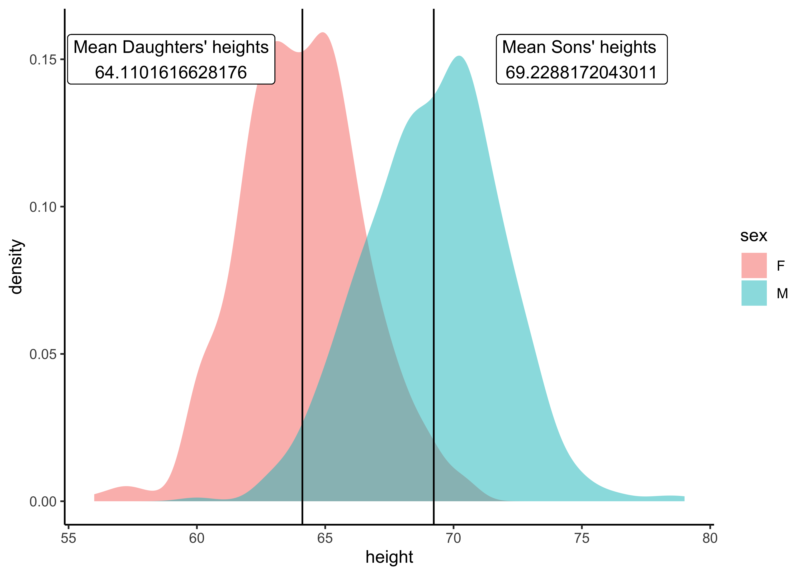
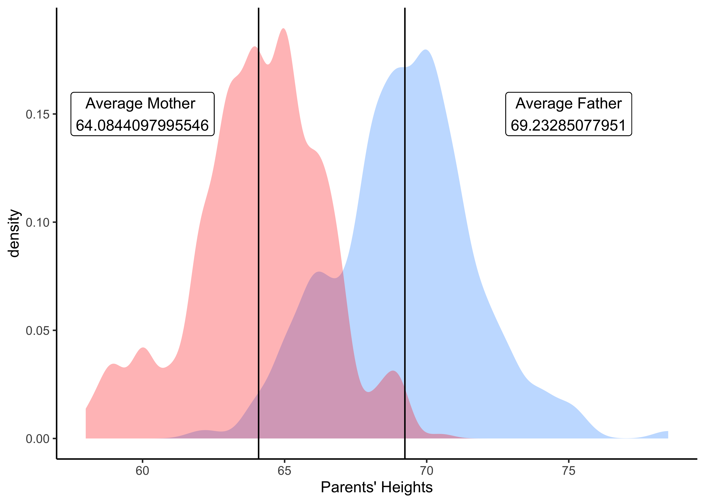

options(tibble.print_min = 4L, tibble.print_max = 4L)
library(mosaic) # package for stats, simulations, and basic plots
library(mosaicData) # package containing datasets
library(ggformula) # package for professional looking plots, that use the formula interface from mosaic
library(NHANES) # survey data collected by the US National Center for Health Statistics (NCHS)Tutorial on Distributions in R
We will create Distributions for data in R. As always, we will consistently use the Project Mosaic ecosystem of packages in R (mosaic, mosaicData and ggformula).
Tip
Note the standard method for all commands from the mosaic package:
goal( y ~ x | z, data = mydata, …)
With ggformula, one can create any graph/chart using:
gf_geometry(y ~ x | z, data = mydata)
OR
mydata %>% gf_geometry( y ~ x | z)
The second method may be preferable, especially if you have done some data manipulation first! More later!
Case Study -1: Dataset from mosaicData
Let us inspect what datasets are available in the package mosaicData. Type data(package = "mosaicData") in your Console to see what datasets are available.
Let us choose the famous Galton dataset:
categorical variables:
name class levels n missing
1 family factor 197 898 0
2 sex factor 2 898 0
distribution
1 185 (1.7%), 166 (1.2%), 66 (1.2%) ...
2 M (51.8%), F (48.2%)
quantitative variables:
name class min Q1 median Q3 max mean sd n missing
1 father numeric 62 68 69.0 71.0 78.5 69.232851 2.470256 898 0
2 mother numeric 58 63 64.0 65.5 70.5 64.084410 2.307025 898 0
3 height numeric 56 64 66.5 69.7 79.0 66.760690 3.582918 898 0
4 nkids integer 1 4 6.0 8.0 15.0 6.135857 2.685156 898 0The data is described as:
A data frame with 898 observations on the following variables.
familya factor with levels for each familyfatherthe father’s height (in inches)motherthe mother’s height (in inches)sexthe child’s sex: F or Mheightthe child’s height as an adult (in inches)nkidsthe number of adult children in the family, or, at least, the number whose heights Galton recorded.
There is a lot of Description generated by the mosaic::inspect() command ! What can we say about the dataset and its variables? How big is the dataset? How many variables? What types are they, Quant or Qual? If they are Qual, what are the levels? Are they ordered levels? Discuss!
Stat Summaries
As Stigler said, summaries are the first thing to look at in data. Let us tabulate some quick stat summaries of the important variables in Galton:
Story: So fathers are on average taller than mothers on average, in this dataset.
Note
Q.1 How many families in the data for each value of nkids?
nkids
1 2 3 4 5 6 7 8 9 10 11 15
32 40 66 116 140 114 112 128 63 40 32 15 Story: There are 32 1-kid families; and \(128/8 = 16\) 8-kid families! There is one great great 15-kid family. ( Did you get the idea behind why we divide here?)
Note
Q.2. What is the break-up by sex of the child?
sex
nkids F M
1 15 17
2 18 22
3 31 35
4 48 68
5 61 79
6 57 57
7 61 51
8 61 67
9 32 31
10 24 16
11 17 15
15 8 7Story: Hmm…decent gender balance overall, across families. How would we look for “gender balance” in individual families?
Distribution Plots
What Questions might we have, that we could answer with a Distribution?
Note
Q.1 How many families based on the number of children?
# Convert the tally into a dataframe. See the difference!
family_count <-
tally( ~ nkids | sex, data = Galton) %>%
as_tibble() %>%
# Convert nkids from char to int
mutate( nkids = as.integer(nkids))
family_countfamily_count %>% gf_col(n ~ nkids | sex,
fill = ~ sex,
ylab = "Number of Families",
xlab = "Number of Kids / Family")
Story: OK this explains the division we did earlier!
Note
Q.2: How are the children’s heights distributed?

Story: Fairly symmetric distribution…but there are a few very short and some very tall children!
Note
Q.3: Is there a difference in height distributions between Male and Female children?

Story: There is a 5 inch difference in average heights between girls and boys. Is that significant, however?
Note
Q.4: Are Mothers generally shorter than fathers?
gf_density(~ father,
data = Galton,
fill = "blue",
alpha = 0.3) %>%
gf_density( ~ mother,
data = Galton,
fill = "red",
alpha = 0.3,
xlab = "Heights")
Story: Yes moms are on average shorter than dads. Again, is this difference statistically significant?
Note
Q.5: Are heights of children different based on the number of kids in the family? For Male and Female children?
Story: Box plots are used to show distributions of numeric data values, especially when you want to compare them between multiple groups. So, at all family “strengths”, the male children are taller than the female children.
Note
Q.6: Does the mean height of children in a family vary with the number of children in the family? ( family size)

Story: Hmm…not a very informative plot…the table is better but also not too easy to interpret. But this question is rather similar to Question 5!
Case Study-2: Dataset from NHANES
Let us try the NHANES dataset. Try help(NHANES) in your Console.
[1] "ID" "SurveyYr" "Gender" "Age"
[5] "AgeDecade" "AgeMonths" "Race1" "Race3"
[9] "Education" "MaritalStatus" "HHIncome" "HHIncomeMid"
[13] "Poverty" "HomeRooms" "HomeOwn" "Work"
[17] "Weight" "Length" "HeadCirc" "Height"
[21] "BMI" "BMICatUnder20yrs" "BMI_WHO" "Pulse"
[25] "BPSysAve" "BPDiaAve" "BPSys1" "BPDia1"
[29] "BPSys2" "BPDia2" "BPSys3" "BPDia3"
[33] "Testosterone" "DirectChol" "TotChol" "UrineVol1"
[37] "UrineFlow1" "UrineVol2" "UrineFlow2" "Diabetes"
[41] "DiabetesAge" "HealthGen" "DaysPhysHlthBad" "DaysMentHlthBad"
[45] "LittleInterest" "Depressed" "nPregnancies" "nBabies"
[49] "Age1stBaby" "SleepHrsNight" "SleepTrouble" "PhysActive"
[53] "PhysActiveDays" "TVHrsDay" "CompHrsDay" "TVHrsDayChild"
[57] "CompHrsDayChild" "Alcohol12PlusYr" "AlcoholDay" "AlcoholYear"
[61] "SmokeNow" "Smoke100" "Smoke100n" "SmokeAge"
[65] "Marijuana" "AgeFirstMarij" "RegularMarij" "AgeRegMarij"
[69] "HardDrugs" "SexEver" "SexAge" "SexNumPartnLife"
[73] "SexNumPartYear" "SameSex" "SexOrientation" "PregnantNow" Stat Summaries
categorical variables:
name class levels n missing
1 SurveyYr factor 2 10000 0
2 Gender factor 2 10000 0
3 AgeDecade factor 8 9667 333
4 Race1 factor 5 10000 0
5 Race3 factor 6 5000 5000
6 Education factor 5 7221 2779
7 MaritalStatus factor 6 7231 2769
8 HHIncome factor 12 9189 811
9 HomeOwn factor 3 9937 63
10 Work factor 3 7771 2229
11 BMICatUnder20yrs factor 4 1274 8726
12 BMI_WHO factor 4 9603 397
13 Diabetes factor 2 9858 142
14 HealthGen factor 5 7539 2461
15 LittleInterest factor 3 6667 3333
16 Depressed factor 3 6673 3327
17 SleepTrouble factor 2 7772 2228
18 PhysActive factor 2 8326 1674
19 TVHrsDay factor 7 4859 5141
20 CompHrsDay factor 7 4863 5137
21 Alcohol12PlusYr factor 2 6580 3420
22 SmokeNow factor 2 3211 6789
23 Smoke100 factor 2 7235 2765
24 Smoke100n factor 2 7235 2765
25 Marijuana factor 2 4941 5059
26 RegularMarij factor 2 4941 5059
27 HardDrugs factor 2 5765 4235
28 SexEver factor 2 5767 4233
29 SameSex factor 2 5768 4232
30 SexOrientation factor 3 4842 5158
31 PregnantNow factor 3 1696 8304
distribution
1 2009_10 (50%), 2011_12 (50%)
2 female (50.2%), male (49.8%)
3 40-49 (14.5%), 0-9 (14.4%) ...
4 White (63.7%), Black (12%) ...
5 White (62.7%), Black (11.8%) ...
6 Some College (31.4%) ...
7 Married (54.6%), NeverMarried (19.1%) ...
8 more 99999 (24.2%) ...
9 Own (64.7%), Rent (33.1%) ...
10 Working (59.4%), NotWorking (36.6%) ...
11 NormWeight (63.2%), Obese (17.3%) ...
12 18.5_to_24.9 (30.3%) ...
13 No (92.3%), Yes (7.7%)
14 Good (39.2%), Vgood (33.3%) ...
15 None (76.5%), Several (16.9%) ...
16 None (78.6%), Several (15.1%) ...
17 No (74.6%), Yes (25.4%)
18 Yes (55.8%), No (44.2%)
19 2_hr (26.2%), 1_hr (18.2%) ...
20 0_to_1_hr (29%), 0_hrs (22.1%) ...
21 Yes (79.2%), No (20.8%)
22 No (54.3%), Yes (45.7%)
23 No (55.6%), Yes (44.4%)
24 Non-Smoker (55.6%), Smoker (44.4%)
25 Yes (58.5%), No (41.5%)
26 No (72.4%), Yes (27.6%)
27 No (81.5%), Yes (18.5%)
28 Yes (96.1%), No (3.9%)
29 No (92.8%), Yes (7.2%)
30 Heterosexual (95.8%), Bisexual (2.5%) ...
31 No (92.7%), Yes (4.2%) ...
quantitative variables:
name class min Q1 median Q3 max
1 ID integer 51624.00 56904.500 62159.500 67039.000 71915.000
2 Age integer 0.00 17.000 36.000 54.000 80.000
3 AgeMonths integer 0.00 199.000 418.000 624.000 959.000
4 HHIncomeMid integer 2500.00 30000.000 50000.000 87500.000 100000.000
5 Poverty numeric 0.00 1.240 2.700 4.710 5.000
6 HomeRooms integer 1.00 5.000 6.000 8.000 13.000
7 Weight numeric 2.80 56.100 72.700 88.900 230.700
8 Length numeric 47.10 75.700 87.000 96.100 112.200
9 HeadCirc numeric 34.20 39.575 41.450 42.925 45.400
10 Height numeric 83.60 156.800 166.000 174.500 200.400
11 BMI numeric 12.88 21.580 25.980 30.890 81.250
12 Pulse integer 40.00 64.000 72.000 82.000 136.000
13 BPSysAve integer 76.00 106.000 116.000 127.000 226.000
14 BPDiaAve integer 0.00 61.000 69.000 76.000 116.000
15 BPSys1 integer 72.00 106.000 116.000 128.000 232.000
16 BPDia1 integer 0.00 62.000 70.000 76.000 118.000
17 BPSys2 integer 76.00 106.000 116.000 128.000 226.000
18 BPDia2 integer 0.00 60.000 68.000 76.000 118.000
19 BPSys3 integer 76.00 106.000 116.000 126.000 226.000
20 BPDia3 integer 0.00 60.000 68.000 76.000 116.000
21 Testosterone numeric 0.25 17.700 43.820 362.410 1795.600
22 DirectChol numeric 0.39 1.090 1.290 1.580 4.030
23 TotChol numeric 1.53 4.110 4.780 5.530 13.650
24 UrineVol1 integer 0.00 50.000 94.000 164.000 510.000
25 UrineFlow1 numeric 0.00 0.403 0.699 1.221 17.167
26 UrineVol2 integer 0.00 52.000 95.000 171.750 409.000
27 UrineFlow2 numeric 0.00 0.475 0.760 1.513 13.692
28 DiabetesAge integer 1.00 40.000 50.000 58.000 80.000
29 DaysPhysHlthBad integer 0.00 0.000 0.000 3.000 30.000
30 DaysMentHlthBad integer 0.00 0.000 0.000 4.000 30.000
31 nPregnancies integer 1.00 2.000 3.000 4.000 32.000
32 nBabies integer 0.00 2.000 2.000 3.000 12.000
33 Age1stBaby integer 14.00 19.000 22.000 26.000 39.000
34 SleepHrsNight integer 2.00 6.000 7.000 8.000 12.000
35 PhysActiveDays integer 1.00 2.000 3.000 5.000 7.000
36 TVHrsDayChild integer 0.00 1.000 2.000 3.000 6.000
37 CompHrsDayChild integer 0.00 0.000 1.000 6.000 6.000
38 AlcoholDay integer 1.00 1.000 2.000 3.000 82.000
39 AlcoholYear integer 0.00 3.000 24.000 104.000 364.000
40 SmokeAge integer 6.00 15.000 17.000 19.000 72.000
41 AgeFirstMarij integer 1.00 15.000 16.000 19.000 48.000
42 AgeRegMarij integer 5.00 15.000 17.000 19.000 52.000
43 SexAge integer 9.00 15.000 17.000 19.000 50.000
44 SexNumPartnLife integer 0.00 2.000 5.000 12.000 2000.000
45 SexNumPartYear integer 0.00 1.000 1.000 1.000 69.000
mean sd n missing
1 6.194464e+04 5.871167e+03 10000 0
2 3.674210e+01 2.239757e+01 10000 0
3 4.201239e+02 2.590431e+02 4962 5038
4 5.720617e+04 3.302028e+04 9189 811
5 2.801844e+00 1.677909e+00 9274 726
6 6.248918e+00 2.277538e+00 9931 69
7 7.098180e+01 2.912536e+01 9922 78
8 8.501602e+01 1.370503e+01 543 9457
9 4.118068e+01 2.311483e+00 88 9912
10 1.618778e+02 2.018657e+01 9647 353
11 2.666014e+01 7.376579e+00 9634 366
12 7.355973e+01 1.215542e+01 8563 1437
13 1.181550e+02 1.724817e+01 8551 1449
14 6.748006e+01 1.435480e+01 8551 1449
15 1.190902e+02 1.749636e+01 8237 1763
16 6.827826e+01 1.378078e+01 8237 1763
17 1.184758e+02 1.749133e+01 8353 1647
18 6.766455e+01 1.441978e+01 8353 1647
19 1.179292e+02 1.717719e+01 8365 1635
20 6.729874e+01 1.495839e+01 8365 1635
21 1.978980e+02 2.265045e+02 4126 5874
22 1.364865e+00 3.992581e-01 8474 1526
23 4.879220e+00 1.075583e+00 8474 1526
24 1.185161e+02 9.033648e+01 9013 987
25 9.792946e-01 9.495143e-01 8397 1603
26 1.196759e+02 9.016005e+01 1478 8522
27 1.149372e+00 1.072948e+00 1476 8524
28 4.842289e+01 1.568050e+01 629 9371
29 3.334838e+00 7.400700e+00 7532 2468
30 4.126493e+00 7.832971e+00 7534 2466
31 3.026882e+00 1.795341e+00 2604 7396
32 2.456954e+00 1.315227e+00 2416 7584
33 2.264968e+01 4.772509e+00 1884 8116
34 6.927531e+00 1.346729e+00 7755 2245
35 3.743513e+00 1.836358e+00 4663 5337
36 1.938744e+00 1.434431e+00 653 9347
37 2.197550e+00 2.516667e+00 653 9347
38 2.914123e+00 3.182672e+00 4914 5086
39 7.510165e+01 1.030337e+02 5922 4078
40 1.782662e+01 5.326660e+00 3080 6920
41 1.702283e+01 3.895010e+00 2891 7109
42 1.769107e+01 4.806103e+00 1366 8634
43 1.742870e+01 3.716551e+00 5540 4460
44 1.508507e+01 5.784643e+01 5725 4275
45 1.342330e+00 2.782688e+00 4928 5072Again, lots of data from inspect, about the Quant and Qual variables. Spend a little time looking through the output of inspect. Which variables could have been data given by each respondent, and which ones could have been measured data variables? Why do you think so?
Why is there so much missing data? Which variable are the most affected by this?
Education
8th Grade 9 - 11th Grade High School Some College College Grad
451 888 1517 2267 2098
<NA>
2779 Story: The count goes up as we go from lower Education levels to higher. Need to keep that in mind.
Work
Education Looking NotWorking Working <NA>
8th Grade 13 249 188 1
9 - 11th Grade 39 438 411 0
High School 52 579 886 0
Some College 88 792 1387 0
College Grad 72 474 1552 0
<NA> 47 315 189 2228Story: Clear increase in the number of Working people as Education goes from 8th Grade to College. No surprise. Is the NotWorking column a surprise?
Distribution Plots
Note
Q.1. What is the distribution of Physical Activity Days, across Gender? Across Education?


Story: Can we conclude anything here? The populations in each category are different, so what do we need to do? Take percentages or ratios of course, per-capita! How would one do that?
Note
Q.1a. What is the distribution of Physical Activity Days, across Gender, per capita? Across Education?
Story: Hmm..no great differences. Females are maginally more active than males.
Note
Q.2. How are people Ages distributed across levels of Education?

Story: Older age groups are more heavily represented in groups with lover educational status. How to interpret the NA group?
Note
Q.3. How is Education distributed over Race?
NHANES %>% group_by(Education, Race1) %>%
summarize( n = n()) %>%
left_join(NHANES_by_Race1, by = c("Race1" = "Race1")) %>%
mutate(percapita_educated = (n/population)*100) %>%
ungroup() %>% # not really needed
gf_col(Education ~ percapita_educated | Race1, fill = ~ Race1)
Story: Blacks, Hispanics, and Mexicans tend to have fewer people with college degrees, as a percentage of their population.
Note
Q.4. What is the distribution of people’s BMI, split by Gender? By Race1?
# One can also plot both histograms and densities in an overlay fashion,
gf_dhistogram(~ BMI | Gender, data = NHANES) %>%
gf_fitdistr(dist = "dnorm") 
gf_dhistogram(~ BMI, data = NHANES) %>%
gf_fitdistr(dist = "dnorm") %>%
gf_refine(facet_wrap(~ Race1, scales = "free"))
Story: Non-white races tend to have larger portions of their populations with larger BMI. So these races perhaps tend to obesity. By and large BMI distributions are normal.
Note
Q.4. What is the distribution of people’s Testosterone level vs BMI? Split By Race1?

Story: Low testosterone levels exist across all BMI values, but healthy levels of T exists only over a smaller range of BMI.
Case Study-3: A complete example
Here is a dataset from Jeremy Singer-Vine’s blog, Data Is Plural. This is a list of all books banned in schools across the US.
[1] "Author" "Title"
[3] "Type of Ban" "Secondary Author(s)"
[5] "Illustrator(s)" "Translator(s)"
[7] "State" "District"
[9] "Date of Challenge/Removal" "Origin of Challenge" Clearly the variables are all Qualitative, except perhaps for Date of Challenge/Removal, (which in this case has been badly mangled by Excel) So we need to make counts based on the levels* of the Qual variables and plot Bar/Column charts.
Let us quickly make some Stat Summaries ( using inspect)
categorical variables:
name class levels n missing
1 Author character 797 1586 0
2 Title character 1145 1586 0
3 Type of Ban character 4 1586 0
4 Secondary Author(s) character 61 98 1488
5 Illustrator(s) character 192 364 1222
6 Translator(s) character 9 10 1576
7 State character 26 1586 0
8 District character 86 1586 0
9 Date of Challenge/Removal character 15 1586 0
10 Origin of Challenge character 2 1586 0
distribution
1 Kobabe, Maia (1.9%) ...
2 Gender Queer: A Memoir (1.9%) ...
3 Banned Pending Investigation (46.1%) ...
4 Cast, Kristin (12.2%) ...
5 Aly, Hatem (4.7%) ...
6 Mlawer, Teresa (20%) ...
7 Texas (45%), Pennsylvania (28.8%) ...
8 Central York (27.8%) ...
9 44440 (28.8%), 44531 (28.3%) ...
10 Administrator (95.6%) ... Let us try to answer this question:
Important
What is the count of banned books by type and by US state?
banned_by_state <-
banned %>%
group_by(State) %>%
summarise(total = n()) %>%
ungroup()
banned_by_statebanned %>%
group_by(State, `Type of Ban`) %>%
summarise(count = n()) %>%
ungroup() %>%
left_join(., banned_by_state, by = c("State" = "State")) %>%
# pivot_wider(.,id_cols = State,
# names_from = `Type of Ban`,
# values_from = count) %>% janitor::clean_names() %>%
# replace_na(list(banned_from_libraries_and_classrooms = 0,
# banned_from_libraries = 0,
# banned_pending_investigation = 0,
# banned_from_classrooms = 0)) %>%
# mutate(total = sum(across(where(is.integer)))) %>%
gf_col(count ~ reorder(State, total),
fill = ~ `Type of Ban`) %>%
gf_labs(x = "Count of Banned Books",
y = "State") %>%
gf_refine(coord_flip()) %>%
gf_theme(theme = theme_minimal())
References
- A detailed analysis of the NHANES dataset, https://awagaman.people.amherst.edu/stat230/Stat230CodeCompilationExampleCodeUsingNHANES.pdf